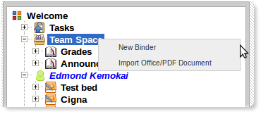
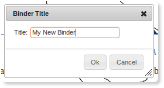
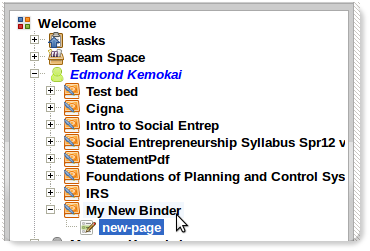
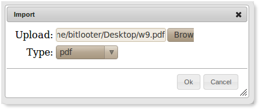
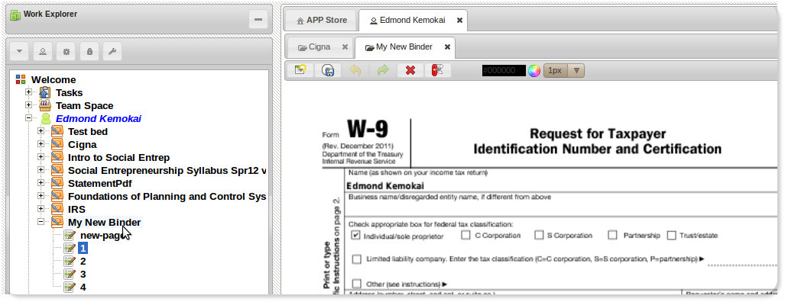

Team Space
Using Team Space
The Team Space is a location for putting group-wide content. It can be used to create a common structure for a given group. For instance, a binder that holds grade information to be viewed by all in the group, or a binder that has pages that host instances of the discussion APP.
Create New Binder
-
Right-click on your name in the navigation panel to reveal menu options:
 -
Enter a name for your binder and click the ok button:
 -
The new binder will be created with a default page as shown below:

Import into Binder
Content can be imported into a binder. Specifically, MS-Word, MS-Powerpoint and PDF documents can be imported into a binder.
-
Right-click on the binder in the navigation panel to reveal menu options:
- Select the "Import Office/PDF Document".
-
Select the file you wish to import and select the correct type:
 -
Upon completion the imported pages or slides would be listed under the binder:
